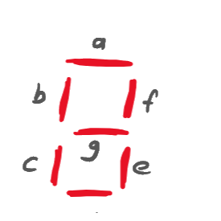

1Don't care (X) nedir?
Hoca dersi üç satırla açmış: 0 → False, 1 → True, X → Don't Care.
Şimdiye kadar her satırın çıkışı ya 0 ya 1'di. Bazı problemlerde ise bir satırın çıkışının ne olduğu önemli değildir. Bunun iki sebebi olabilir:
- O giriş hiç gelmez. Örneğin girişe BCD bir rakam geliyorsa 1010–1111 desenleri asla gelmez (1. dersten hatırla: bunlar BCD'de geçersiz). Gelmeyecek bir girişe ne cevap verdiğimizin önemi yok.
- O durumda çıkış kullanılmaz. Örneğin bir ekran o durumda kapalıysa, ona hangi sinyali gönderdiğimiz fark etmez.
Bu satırların çıkışına X yazarız (bazı kitaplarda d ya da –). Kanonik formda ayrı bir listeyle gösterilir: F = Σm(…) + d(…). d listesindeki numaralar X'lerdir. POS tarafında da aynı fikir: F = ΠM(…) · d(…).
X'ler nasıl kullanılır?
X bir joker gibi davranır. Karnaugh haritasında:
- Bir X, bir grubu büyütmeye yarıyorsa onu 1 kabul edip gruba katarsın.
- İşine yaramıyorsa 0 kabul edip dışarıda bırakırsın.
- Her X için ayrı karar verilir. Bazıları 1, bazıları 0 olabilir.
1. Sadece X'lerden oluşan grup yapma. X'ler 1'leri örtmeye yardım etmek için var, tek başlarına örtülmeleri gerekmez.
2. X'leri örtmek zorunda değilsin. Bütün 1'ler en az bir grupta olmalı, ama X'ler dışarıda kalabilir.
2X'li haritayı çözmek
Örnek 1
Hocanın örneği, PDF s.1F = Σm(0, 2, 3, 4, 9, 12) + d(5, 6, 7, 8, 13)
- AD: üst iki satırda sol ve sağ sütun (kenarlar komşu). İçinde m₀, m₄, m₂ (1'ler) ve m₆ (X). m₆'yı 1 kabul ettik, böylece 4'lü kare oldu.
- AC: üst iki satırın sağ iki sütunu: m₃, m₂ (1), m₇, m₆ (X). İki X'i de 1 kabul ettik.
- AC: alt iki satırın sol iki sütunu: m₁₂, m₉ (1), m₁₃, m₈ (X).
- m₅ (X) hiçbir grupta değil. Ona 0 dedik, çünkü işimize yaramadı.
F = AD + AC + AC
X'siz olsaydı? Bütün X'leri 0 kabul edersek en sade sonuç ABD + ABC + BCD + ABCD olur: 13 harf. X'leri kullanınca 6 harfe düştü.
Örnek 2
Hocanın örneği, PDF s.1F = Σm(0, 3, 7, 8, 13) + d(2, 6, 9, 10, 11, 12, 14, 15)
- C: sağ iki sütunun tamamı (8 hücre). İçindeki 1'ler m₃, m₇, geri kalanı X.
- A: alt iki satırın tamamı (8 hücre). İçindeki 1'ler m₁₃, m₈.
- BD: dört köşe. m₀ (1), m₂, m₈, m₁₀. m₀'ı örtmenin en büyük yolu bu.
F = A + C + BD
X'siz olsaydı BCD + ACD + ABCD (10 harf) çıkardı. X'lerle 4 harf.
X'li soruda önce sadece 1'lere bak ve her 1 için "bunu içeren en büyük grup ne, X'leri de sayarsam?" diye sor. Grupları X'ler sayesinde 8'e, 16'ya kadar büyütebilirsin. Çözümünde hangi X'i 1, hangisini 0 kabul ettiğini belirtmen gerekmez, ama gruplar haritada açıkça görünmeli.
3Haritadan POS (K-maps in POS)
Şimdiye kadar 1'leri grupladık ve SOP (çarpımlar toplamı) yazdık. Aynı haritada 0'ları gruplarsak POS (toplamlar çarpımı) çıkar.
Nasıl?
- Bu sefer 0'ları grupla. Kurallar aynı: 2ⁿ'lik dikdörtgenler, olabildiğince büyük, kenarlar komşu. X'leri yine işine gelirse gruba kat (bu sefer 0 kabul etmiş olursun).
- Her grubu bir toplam terimine çevir. Maxterm kuralı geçerli: grubun her yerinde 0 olan değişken düz, 1 olan çizgili, değişen yazılmaz. Harfler arasına + koy.
- Bütün toplam terimlerini çarp.
0'ların grubu aslında F'nin bir terimidir. Örneğin A = 0, C = 1 olan 0'ların grubu F için AC terimini verir. F'ye geçmek için De Morgan uygularız: AC = A + C. Çizgiler yer değiştirir, · işareti + olur. 3. dersteki maxterm kuralının aynısı.
0'ların bütün grupları birlikte F = T₁ + T₂ + T₃ verir. De Morgan ile F = T₁ · T₂ · T₃: her grubun tersi alınır (bu tersler toplam terimleridir) ve çarpılır.
What is F in POS?
Hocanın örneği, PDF s.1–2- A + C: üst iki satırın sağ iki sütunu (m₃, m₂, m₇, m₆). Bu grupta A = 0 (düz A), C = 1 (çizgili C).
- A + B: ikinci satırın tamamı (AB = 01: m₄, m₅, m₇, m₆). A = 0, B = 1.
- B + D: CD = 01 ve 11 sütunlarında üst ve alt satır (m₁, m₃, m₉, m₁₁). Üst ve alt kenar komşu. B = 0, D = 1.
F = (A + C)(A + B)(B + D)
Liste gösterimiyle: F = ΠM(2, 3, 4, 5, 7, 9, 11) · d(1, 6, 8, 14, 15).
Write F in POS
Hocanın örneği, PDF s.2- B + C: CD = 00 ve 01 sütunlarında üst ve alt satır (m₀, m₁, m₈, m₉). B = 0, C = 0.
- A + B + D: m₅ ve m₇ (X). A = 0, B = 1, D = 1.
- A + C + D: m₁₅ ve m₁₁ (X). A = 1, C = 1, D = 1.
F = (B + C)(A + B + D)(A + C + D)
m₅'i m₇ yerine m₁ (X) ile, m₁₅'i m₁₁ yerine m₇ (X) ile de gruplayabilirdin. Sonuç yine 3 grup, her biri 3 harf: aynı uzunlukta başka bir doğru cevap.
Liste gösterimiyle: F = ΠM(0, 5, 8, 9, 15) · d(1, 2, 7, 11, 12, 14).
POS'ta grup okurken SOP alışkanlığıyla çizgileri ters koymak. Kural: 0 → düz, 1 → çizgili. Kontrol için gruptaki bir hücrenin değerlerini terime koy: toplam terimi o hücrede 0 çıkmalı.
Bir de şu: aynı X, SOP çözümünde 1, POS çözümünde 0 kabul edilmiş olabilir. Bu yüzden X'li bir fonksiyonun en sade SOP'u ile en sade POS'u X hücrelerinde farklı değer verebilir. İkisi de doğrudur, çünkü X'lerin değeri önemsiz.
4Çok çıkışlı tasarım: 2 bitlik kare devresi
Draw the logic circuit diagram of a circuit that calculates the square of 2-bit inputs
Hocanın örneği, PDF s.2–32 bitlik bir giriş (A₁A₀) 0–3 arası bir sayıdır. Karesi en fazla 9 olur. 9'u yazmak için 4 bit gerekir, o yüzden devrenin 4 çıkışı var: F₃F₂F₁F₀.
| A₁ | A₀ | Onluk | Kare | F₃ | F₂ | F₁ | F₀ |
|---|---|---|---|---|---|---|---|
| 0 | 0 | 0 | 0 | 0 | 0 | 0 | 0 |
| 0 | 1 | 1 | 1 | 0 | 0 | 0 | 1 |
| 1 | 0 | 2 | 4 | 0 | 1 | 0 | 0 |
| 1 | 1 | 3 | 9 | 1 | 0 | 0 | 1 |
Hocanın notunda çıkış sütununun başlığı "BCD". 0, 1, 4, 9 sayıları 10'dan küçük olduğu için BCD ile düz ikili burada aynı, sorun yok.
Anahtar fikir: Çok çıkışlı bir devrede her çıkış ayrı bir fonksiyondur. Her biri için ayrı doğruluk tablosu sütunu, ayrı formül.
- F₃ sadece 11 satırında 1 → F₃ = A₁A₀ (AND).
- F₂ sadece 10 satırında 1 → F₂ = A₁A₀.
- F₁ hiçbir satırda 1 değil → F₁ = 0. Bu çıkış doğrudan GND'ye bağlanır.
- F₀ 01 ve 11 satırlarında 1. Hoca bunu 2 değişkenli haritayla çözmüş: sağ sütun (A₀ = 1) tamamen 1 → F₀ = A₀. Kapıya bile gerek yok, A₀ kablosu doğrudan çıkışa gider.
Satırlar A₁, sütunlar A₀. Sağ sütunun tamamı 1, grup: A₀.
Kare devresi: girişlere bas
5Çıkışı göstermek: LED
Devrenin çıkışı bir ikili sayı. Bunu bir insana göstermenin en basit yolu her bit için bir ışık (LED).
Hoca 5 girişli, 4 çıkışlı bir sistem çizmiş (kablonun üstündeki eğik çizgi ve yanındaki sayı, o kabloda kaç bit olduğunu gösterir). Her çıkış biti bir direnç (R) üzerinden bir LED'e (D) bağlı, LED'in diğer ucu toprağa. Bit 1 ise LED yanar (ON), 0 ise söner (OFF).
Şekildeki semboller: Zikzak çizgi dirençtir (R): LED'den geçen akımı sınırlar, yoksa LED bozulur. Ucunda dik çizgi olan üçgen bir diyottur, akım sadece üçgenin gösterdiği yönde geçer. Üstündeki iki küçük ok ışık saçtığını gösterir: LED (Light Emitting Diode, ışık yayan diyot). Üç kısa yatay çizgi topraktır (GND, 0 V; 2. dersten hatırla). Çıkış biti 1 olunca akım R → D → toprak yolundan akar ve LED yanar. Bit 0 olunca iki uç da 0 V'tadır, akım akmaz, LED söner.
LED'ler: ON, ON, OFF, ON
Hocanın örneği, PDF s.3D₃ = ON, D₂ = ON, D₁ = OFF, D₀ = ON → ikili 1101 → onluk 8 + 4 + 1 = 13.
Sorun şu: bir insanın LED'lere bakıp kafasında ikiliden onluğa çevirmesi gerekiyor. Daha kullanışlı olanı sayıyı doğrudan rakam olarak göstermek. Bunun için 7 segment gösterge kullanılır.
67 segment gösterge
Hesap makinelerindeki, dijital saatlerdeki rakamlar. Yedi tane çubuk (segment) var, hangilerinin yanacağını seçerek 0–9 arası her rakamı yazabilirsin.
Hoca önce bütün segmentlerin yandığı 8'i, sonra bazı segmentleri sönmüş 7, 3 ve 1'i çizmiş. Her rakam için hangi segmentlerin yanacağı bir doğruluk tablosuyla belirlenir. Bazı göstergelerde 6 üst segmentsiz, 9 alt segmentsiz, 7 sol üst segmentli çizilir. Bu, tabloyu ve formülleri değiştirir. Sınavda hocanın tablosunu esas al.
Segmentlerin adları

Hoca segmentleri şöyle adlandırmış: a üst, b sol üst, f sağ üst, g orta, c sol alt, e sağ alt, d alt. Veri sayfalarında ve çoğu kitapta kullanılan standart düzende ise a üstten başlayıp saat yönünde döner: b sağ üst, c sağ alt, d alt, e sol alt, f sol üst, g orta.
Yani hocanın b'si standart f, hocanın f'si standart b, hocanın c'si standart e, hocanın e'si standart c. Bu sayfada hocanın düzeni kullanılıyor. Sınavda soru hangi düzeni veriyorsa onu kullan. Bir şekil verilmemişse hangi düzeni kullandığını cevabının başına bir çizimle belirt.
Dönüştürücüyü dene: D₃D₂D₁D₀ girişlerine bas
Giriş:
a= b= c= d= e= f= g=
7İkili → 7 segment dönüştürücü
"Design a 4-bit binary to 7-segment display converter." Hocanın blok çizimi: Inputs → Logic System → Outputs → Binary to 7-Segment Display Converter → 7-Segment Display.
Dönüştürücünün 4 girişi (D₃D₂D₁D₀) ve 7 çıkışı (a–g) var. Yani aslında 7 ayrı fonksiyon tasarlayacağız, her segment için bir tane. 4. bölümdeki kare devresiyle aynı fikir. (Hoca LED'lere de D₃–D₀ demişti. Orada D diyot, burada ise göstergeyi süren 4 veri biti.)
1. adım: doğruluk tablosu
| Rakam | D₃ | D₂ | D₁ | D₀ | a | b | c | d | e | f | g |
|---|
10–15 neden X? Girişe sadece 0–9 arası rakamlar gelecek (BCD). 1010–1111 desenleri hiç gelmeyeceği için o satırların çıkışı umurumuzda değil. Bu X'ler haritalarda grupları çok büyütecek.
Soru "4-bit binary" diyor ama tabloda 10–15 X. Yani bu aslında bir BCD → 7 segment dönüştürücü: giriş sadece 0–9. Gerçekten 4 bitlik ikili (0–15) gösterilecek olsaydı 10–15 için X değil A, b, C, d, E, F harf desenleri gerekirdi. 5. bölümdeki 13 gibi bir sayıyı göstermek için de iki gösterge (iki BCD rakam: 0001 0011) gerekir. Sınavda hocanın tablosunu kullan.
2. adım: her segment için bir harita
a segmenti
Hocanın çözümü, PDF s.4a = 1 olan rakamlar: 0, 2, 3, 5, 6, 7, 8, 9. Sadece 1 ve 4'te sönük.
- D₁: sağ iki sütun (D₁D₀ = 11, 10). 8 hücre: 1'ler ve X'ler.
- D₃: alt iki satır (D₃D₂ = 11, 10). 8 hücre.
- D₂D₀: orta iki satır ile orta iki sütun: m₅, m₇, m₁₃, m₁₅.
- D₂D₀: dört köşe: m₀, m₂, m₈, m₁₀.
a = D₁ + D₃ + D₂D₀ + D₂D₀ = D₁ + D₃ + D₂ ⊙ D₀
Hoca son iki terimi XNOR olarak tanımış: D₂D₀ + D₂D₀ = D₂ ⊙ D₀.
b segmenti (hocanın düzeninde sol üst)
Hocanın çözümü, PDF s.4b = 1 olan rakamlar: 0, 4, 5, 6, 8, 9.
- D₃: alt iki satır.
- D₂D₀: orta iki satırın sol ve sağ sütunu (kenarlar komşu): m₄, m₆, m₁₂, m₁₄.
- D₂D₁: orta iki satırın sol iki sütunu: m₄, m₅, m₁₂, m₁₃.
- D₁D₀: sol sütunun tamamı: m₀, m₄, m₁₂, m₈.
b = D₃ + D₂D₀ + D₂D₁ + D₁D₀
Hoca a ve b'yi çözmüş. Diğer beşi aynı yöntemle çözülür ve sınavda biri sorulabilir. Aşağıda hocanın segment düzenine göre hepsi var. Birden fazla en sade gruplama varsa biri gösterildi. Aynı uzunlukta farklı bir gruplama da doğrudur.
3. adım: devre
Her segmentin formülü kendi kapılarıyla çizilir. Ortak terimler (ör. D₂D₀ hem a'da hem başka segmentlerde) tek bir kapıyla üretilip paylaşılabilir. Bu, büyük tasarımlarda kapı sayısını azaltmanın yoludur.
8X'li harita çözücü
Hücrelere tıkladıkça 0 → 1 → X → 0 diye değişir. SOP (1'leri grupla) ya da POS (0'ları grupla) modunu seç.
9Özet kâğıdı
Don't care
- X: bu satırın çıkışı önemsiz (giriş gelmez ya da çıkış kullanılmaz)
- F = Σm(…) + d(…)
- X işe yarıyorsa 1 (ya da POS'ta 0) say, yaramıyorsa dışarıda bırak
- Sadece X'ten grup yapma, X'leri örtmek zorunlu değil
Haritadan POS
- 0'ları grupla (X'ler yardımcı)
- Grupta 0 olan değişken düz, 1 olan çizgili
- Harfler arası +, terimler çarpılır
- Kontrol: terim gruptaki hücrelerde 0 vermeli
Çok çıkışlı tasarım
- Her çıkış ayrı bir fonksiyon, ayrı harita
- Hep 0 olan çıkış → GND
- Kare devresi: F₃ = A₁A₀, F₂ = A₁A₀, F₁ = 0, F₀ = A₀
7 segment (hocanın adları)
- a üst, b sol üst, f sağ üst, g orta, c sol alt, e sağ alt, d alt
- Giriş 10–15: X (BCD'de yok)
- a = D₁ + D₃ + D₂ ⊙ D₀
- b = D₃ + D₂D₀ + D₂D₁ + D₁D₀
İngilizce–Türkçe terimler
- don't care
- önemsiz değer (X)
- product of sums (POS)
- toplamlar çarpımı
- multiple-output circuit
- çok çıkışlı devre
- LED, resistor
- ışık yayan diyot, direnç
- 7-segment display
- 7 parçalı gösterge
- converter / decoder
- dönüştürücü / kod çözücü
- square
- kare (sayının kendisiyle çarpımı)
10Alıştırmalar ve test
Çözümlü alıştırmalar
- F(A,B,C,D) = Σm(1, 3, 7, 11, 15) + d(0, 2, 5)'i SOP olarak sadeleştir.
Çözümü göster
CD: CD = 11 sütunu tamamen (m₃, m₇, m₁₅, m₁₁). AD: üst iki satırın orta iki sütunu (m₁, m₃, m₅, m₇), m₅ X. Sonuç: F = CD + AD. (m₁ için AB grubu da aynı uzunlukta: m₀, m₁, m₃, m₂.)
- F(A,B,C,D) = Σm(0, 1, 2, 5, 8, 9, 10)'u POS olarak yaz.
Çözümü göster
0'lar: 3, 4, 6, 7, 11, 12, 13, 14, 15. Gruplar: CD bölgesi (m₃, m₇, m₁₅, m₁₁) → (C + D). BD bölgesi (m₄, m₆, m₁₂, m₁₄) → (B + D). AB satırı (m₁₂–m₁₅) → (A + B). F = (C + D)(B + D)(A + B).
- Girişi BCD bir rakam (ABCD) olan bir devre, rakam 5 veya daha büyükse 1 versin. F'yi X'leri kullanarak sadeleştir.
Çözümü göster
F = Σm(5, 6, 7, 8, 9) + d(10–15). Gruplar: A (alt iki satır), BD (m₅, m₇, m₁₃, m₁₅), BC (m₆, m₇, m₁₄, m₁₅). F = A + BD + BC. X'ler olmasaydı ABD + ABC + ABC çıkardı.
- Hocanın segment düzeninde 4 rakamı için hangi segmentler yanar?
Çözümü göster
Sol üst (b), sağ üst (f), orta (g), sağ alt (e): b, e, f, g. Tablo satırı: a=0, b=1, c=0, d=0, e=1, f=1, g=1.
- 2 bitlik kare devresinde F₁ neden GND'ye bağlandı?
Çözümü göster
0, 1, 4, 9 sayılarının hiçbirinde 2¹ basamağı (F₁) 1 değil. F₁ her zaman 0 olduğu için kapıya gerek yok, sabit 0 (toprak) yeterli.
- F(A,B,C) = Σm(0, 2, 5) + d(1, 7)'yi sadeleştir.
Çözümü göster
m₀, m₂: AC (kenarlar komşu). m₅: m₁ (X) ile BC ya da m₇ (X) ile AC. F = AC + BC (ya da AC + AC, ikisi de doğru).